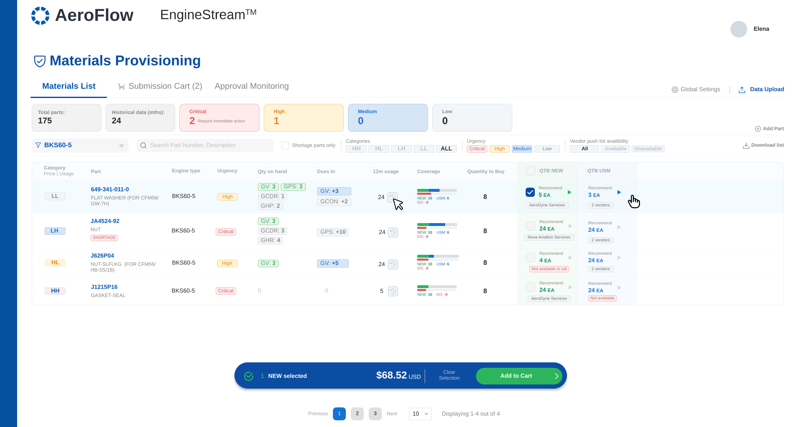
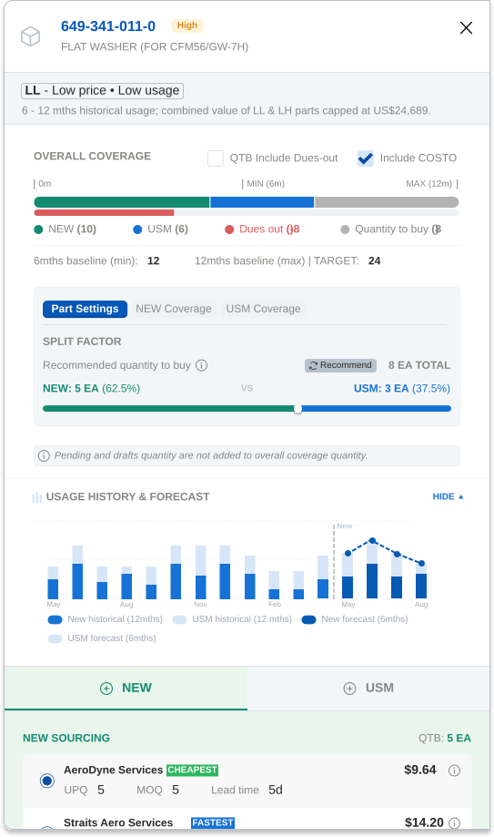
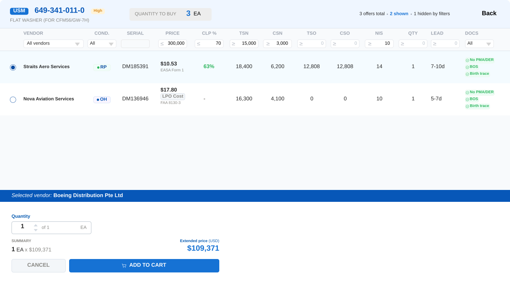
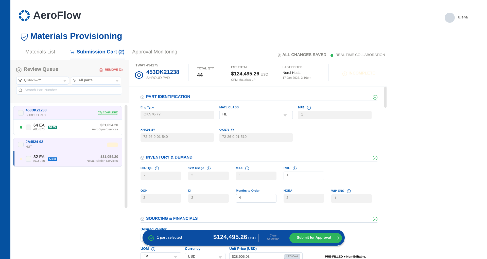
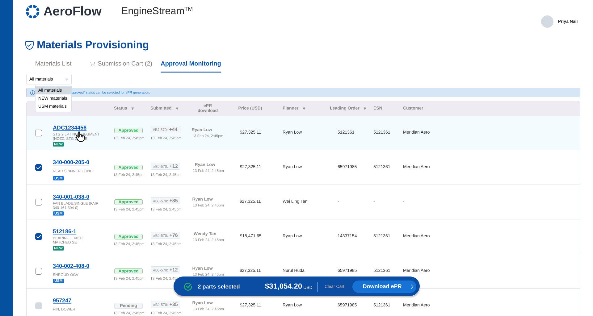

AEROSPACE · SUPPLY CHAIN · ENTERPRISE
Predictive Purchasing Before the Engine Arrives
Confidentiality note: In line with applicable NDAs, all company names, client identities, proprietary part numbers, and live commercial data have been anonymized or generalized. The underlying workflow design, information architecture, and product thinking presented here are unaltered and authentic.

Elena · Material Planner
UX rationale — stakeholders had already defined the rules for each quadrant; turning them into a visible 2×2 grid let Elena see at a glance which parts needed a quick lookup versus a full forecast, instead of memorizing four policies.
UX rationale — without this view, it's easy to accidentally double-order a part that's already partially fulfilled. One progress bar lets Elena see fulfillment status at a glance instead of cross-checking manually.

UX rationale — these deals used to arrive as static PDFs, disconnected from the part they applied to. Sliding the data next to the line item turned a passive email into an active, in-context decision.

UX rationale — staging picks in a cart before submission means Elena can review everything at once instead of submitting parts one at a time.

UX rationale — every submitted order needs a single place to check status, rather than following up over email.

| Operational Area | Before | After |
|---|---|---|
| Data Gathering | 5 Excel sheets, vendor PDFs, and email | Single unified decision workspace |
| Recommended Quantities | One-size calculation regardless of part category | Quantity logic tailored to each quadrant |
| Stock Coverage Visibility | No single view of what's covered vs. still needed | Progress bar showing coverage sufficiency |
| USM Sourcing | Ad-hoc scanning of vendor PDF attachments | In-context side-drawer matching panel |